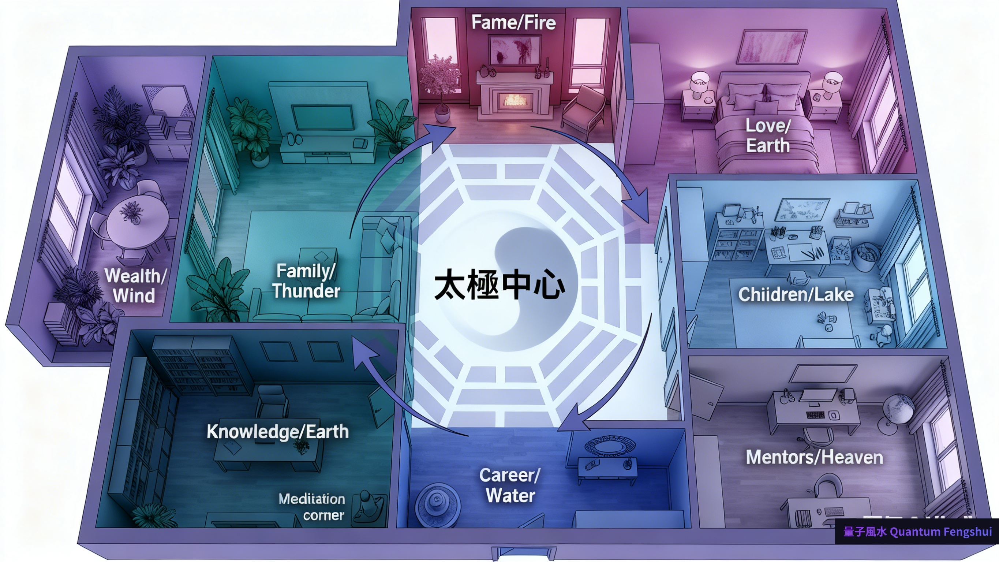

引言：千年智慧的現代價值
《易經》作為中華文化的瑰寶，已有三千多年歷史。其核心概念「八卦」不僅是占卜工具，更是一套完整的宇宙觀與空間哲學。在現代室內設計與空間規劃領域，易經八卦提供了獨特而實用的指導原則。
本文將深入探討如何將易經八卦的古老智慧應用於當代居家與辦公空間，從理論基礎到實際操作，為您提供完整的專業指南。
一、易經八卦基礎知識
1.1 八卦的起源與含義
八卦源於伏羲氏對自然現象的觀察與總結，以「陰爻」(--) 與「陽爻」(—) 的不同組合，形成八種基本卦象：
| 卦名 | 符號 | 自然象徵 | 方位 | 五行屬性 | 家庭成員 |
|---|---|---|---|---|---|
| 乾卦 (Qian) | ☰ | 天、強健 | 西北 | 金 | 父親 |
| 坤卦 (Kun) | ☷ | 地、柔順 | 西南 | 土 | 母親 |
| 震卦 (Zhen) | ☳ | 雷、震動 | 東 | 木 | 長男 |
| 巽卦 (Xun) | ☴ | 風、溫和 | 東南 | 木 | 長女 |
| 坎卦 (Kan) | ☵ | 水、流動 | 北 | 水 | 中男 |
| 離卦 (Li) | ☲ | 火、光明 | 南 | 火 | 中女 |
| 艮卦 (Gen) | ☶ | 山、穩定 | 東北 | 土 | 少男 |
| 兌卦 (Dui) | ☱ | 澤、喜悅 | 西 | 金 | 少女 |
核心概念：八卦不僅代表八種自然現象，更象徵八種基本能量模式。在空間規劃中，我們通過理解這些能量特質，來優化不同功能區域的配置。
1.2 八卦的哲學基礎
易經八卦建立在以下核心哲學概念之上：
- 陰陽平衡：宇宙萬物都由陰陽兩種基本力量組成，空間規劃需要平衡這兩種能量
- 五行相生相剋：金、木、水、火、土五種元素相互影響，決定空間的和諧度
- 天人合一：人與環境是一個整體，空間布局應順應自然規律
- 動態平衡：能量不是靜止的，而是持續流動變化的過程
二、八卦在現代空間規劃中的應用
2.1 八卦方位圖的使用方法
將八卦方位圖應用於實際空間的步驟：
- 確定座向：站在入口處，面向室內，確定房屋的主要朝向
- 繪製平面圖：按實際比例繪製空間平面圖
- 疊加八卦圖：將八卦方位圖疊加在平面圖上，入口通常對應坎卦（北方/事業位）
- 標註功能區：根據八卦對應的生活領域，標註各區域功能
- 分析能量流：檢視能量在空間中的流動路徑
2.2 八卦對應的人生領域
根據後天八卦（文王八卦），每個卦位對應不同的人生領域：
| 方位 | 卦象 | 對應領域 | 適合功能 | 強化方法 |
|---|---|---|---|---|
| 北 (北方) | 坎 (水) | 事業、職涯 | 入口、玄關 | 流動元素、黑色/深藍色 |
| 東北 | 艮 (土) | 知識、智慧 | 書房、學習區 | 黃色、陶瓷、水晶 |
| 東 (東方) | 震 (木) | 家庭、健康 | 客廳、起居室 | 綠色植物、木製家具 |
| 東南 | 巽 (木) | 財富、豐盛 | 餐廳、儲藏室 | 紫色、流動水景 |
| 南 (南方) | 離 (火) | 名聲、社交 | 會客廳、展示區 | 紅色、明亮照明 |
| 西南 | 坤 (土) | 愛情、關係 | 主臥室 | 粉色、成對物品 |
| 西 (西方) | 兌 (金) | 子女、創造力 | 兒童房、工作室 | 白色、金屬材質 |
| 西北 | 乾 (金) | 貴人、領導力 | 書房、辦公室 | 灰色、金色、圓形 |
2.3 各功能區的八卦優化方案
🏠 客廳（震卦 - 東方 - 家庭健康）
- 位置選擇：盡量安排在住宅東側，接受早晨陽光
- 色彩搭配：以綠色、藍色為主調，搭配木質元素
- 家具布置：圓形或方形茶几，象徵團圓和諧
- 植物配置：擺放闊葉植物，增強生命力能量
- 避免禁忌：不宜擺放枯萎植物、刀劍尖銳物
🛏️ 主臥室（坤卦 - 西南 - 愛情關係）
- 位置選擇：西南方最佳，促進夫妻和諧
- 色彩搭配：溫暖色調，粉色、米色、淺黃色
- 床位擺放：床頭靠實牆，避免對門對窗
- 成對原則：床頭櫃、檯燈等物品成對擺放
- 避免禁忌：鏡子不對床，避免水族箱
📚 書房（乾卦 - 西北 - 貴人智慧 或 艮卦 - 東北 - 知識學習）
- 位置選擇：西北或東北方位，有利於思考決策
- 書桌方位：面向門但不正對門，背靠實牆
- 色彩搭配：淺色調為主，避免過於鮮豔
- 照明設計：自然光與人工光結合，避免陰暗
- 擺設選擇：文昌塔、水晶球、名人字畫
🍳 廚房（巽卦 - 東南 - 財富豐盛 或 離卦 - 南方 - 火能量）
- 位置選擇：東南方最佳，象徵財源廣進
- 爐灶方位：不與水槽直線相對（水火不容）
- 通風採光：保持良好通風，避免油煙積聚
- 收納整潔：櫥櫃整齊，避免雜亂無章
- 色彩選擇：黃色、橙色、木色為佳
三、實戰指南：打造和諧空間的 5 大步驟
步驟 1：空間能量診斷
在開始規劃之前，先進行全面的空間能量診斷：
能量診斷檢查清單：
- 繪製準確的住宅平面圖（含方位）
- 標記所有門窗位置與開啟方向
- 記錄主要家具與電器位置
- 觀察陽光照射路徑與時間
- 感受各區域的氣氛與能量感
- 記錄家庭成員的生活動線
- 檢查是否有「煞氣」存在（尖角、橫樑、暗角等）
步驟 2：八卦方位定位
使用羅盤或手機指南針 APP 精確測量：
- 找出住宅中心點：將平面圖對折兩次，交點即為中心
- 確定坐向：站在中心點，使用羅盤測量各方位
- 劃分八卦區域：以中心為原點，劃分 45° × 8 的扇形區域
- 標註對應領域：在每個區域標註對應的人生領域
專業提示：現代建築多為不規則格局，若某個卦位「缺角」，可使用鏡子、植物、燈光等方式進行能量補充。
步驟 3：五行平衡調整
根據八卦五行屬性，調整空間元素平衡：
| 五行 | 對應卦位 | 代表色彩 | 適用材質 | 形狀特徵 |
|---|---|---|---|---|
| 木 | 震（東）、巽（東南） | 綠色、青色 | 木材、竹子、棉麻 | 長方形、柱狀 |
| 火 | 離（南） | 紅色、紫色、橙色 | 塑料、合成材料 | 三角形、尖狀 |
| 土 | 坤（西南）、艮（東北） | 黃色、棕色、米色 | 陶瓷、石材、水泥 | 正方形、寬扁 |
| 金 | 兌（西）、乾（西北） | 白色、金色、銀色 | 金屬、玻璃 | 圓形、弧形 |
| 水 | 坎（北） | 黑色、深藍色 | 玻璃、鏡面 | 波浪形、不規則 |
步驟 4：能量流動優化
確保「氣」在空間中順暢流動：
- 入口玄關：明亮整潔，避免雜物堆積，設置屏風或玄關櫃緩衝
- 走道動線：保持暢通，寬度至少 90cm，避免過長直線走廊
- 窗戶採光：定期開窗通風，窗簾選擇可調節光線
- 室內高度：避免壓迫感，橫樑下可用吊頂或植物化解
- 轉角處理：尖角用圓形家具或植物柔化
步驟 5：個人化調整與維護
根據家庭成員的生辰八字與個人需求微調：
個人化調整要點：
- 考慮家庭成員的五行喜忌
- 根據職業特性強化對應卦位
- 依據健康狀況調整相應區域
- 配合季節變化更換色彩與擺設
- 定期清理與能量淨化（每季度一次）
- 記錄變化後的生活感受與改善效果
四、實際案例分析
案例一：三房兩廳住宅的八卦規劃
基本資訊：120㎡，坐北朝南，入口位於北方
規劃方案：
- 北方入口（坎卦/事業）：玄關設計簡潔大方，深藍色地毯，流水造景
- 東方客廳（震卦/家庭）：大面積窗戶，綠色植物牆，木質家具
- 東南餐廳（巽卦/財富）：紫色點綴，流動水景，圓形餐桌
- 南方陽台（離卦/名聲）：明亮採光，紅色點綴，社交休閒區
- 西南主臥（坤卦/愛情）：粉色系，成對擺設，避免鏡子對床
- 西方兒童房（兌卦/創造力）：白色基調，金屬玩具收納，圓角家具
- 西北書房（乾卦/貴人）：灰色沉穩，金屬書架，圓形地毯
- 東北次臥（艮卦/知識）：黃色調，水晶擺飾，學習氛圍
效果反饋：屋主反映家庭氣氛更和諧，工作順利，子女學業進步，夫妻關係改善。
案例二：辦公室的八卦能量布局
基本資訊：200㎡開放式辦公室，入口東北方
規劃重點：
- 西北（乾卦）：總經理辦公室，提升領導力與決策力
- 東南（巽卦）：財務部門，強化財富能量
- 東方（震卦）：員工休息區，促進團隊凝聚力
- 南方（離卦）：會議室與展示區，提升公司形象
效果反饋：公司業績提升 30%，員工離職率下降，團隊合作更順暢。
五、常見錯誤與解決方案
錯誤 1：忽略住宅實際方位
問題：僅憑大致感覺判斷方位，導致八卦對應錯誤。
解決：使用專業羅盤或手機 APP 精確測量，誤差不超過 5°。
錯誤 2：過度裝飾導致能量阻塞
問題：為了「強化」某個卦位而過度擺放物品，反而造成雜亂。
解決：遵循「少即是多」原則，每個區域選擇 1-3 個關鍵元素即可。
錯誤 3：忽略五行相剋關係
問題：在同一空間混用相剋元素，如水火並置。
解決：使用「通關」五行化解，如在水火之間加入木元素（綠色植物）。
錯誤 4：照搬理論不考慮實際需求
問題：完全按照理論配置，忽略家庭實際生活習慣。
解決：理論為輔，實用為主，在理想與現實之間找到平衡點。
六、空間能量的長期維護
季節性調整
根據四季變化調整空間能量：
- 春季（木旺）：加強東方與東南方，增添綠色植物與木製品
- 夏季（火旺）：強化南方，使用紅色、橙色點綴，增加照明
- 秋季（金旺）：注重西方與西北方，白色、金色元素，金屬裝飾
- 冬季（水旺）：關注北方，深色調，流動水景或魚缸
定期能量淨化
能量淨化方法（每季度執行）：
- 徹底清潔，清除灰塵與雜物
- 開窗通風，讓新鮮空氣流通
- 使用鼠尾草、檀香淨化空間
- 調整家具位置，避免能量停滯
- 更換枯萎植物，修剪過旺枝葉
- 檢查燈具，更換昏暗燈泡
- 用鹽水拖地，淨化地氣
結論：古老智慧與現代生活的完美結合
易經八卦不是迷信，而是一套系統化的空間哲學與能量管理方法。通過理解八卦的核心原理，並結合現代空間規劃技術，我們可以創造出既美觀又充滿正能量的生活環境。
記住以下關鍵原則：
- ✅ 方位精確：使用專業工具確定準確方位
- ✅ 五行平衡：注重相生關係，化解相剋衝突
- ✅ 能量流動：保持空間通暢，避免阻塞
- ✅ 個人化調整：根據家庭成員需求微調
- ✅ 定期維護：隨季節與生活變化靈活調整
最重要的是，理論需要與實踐結合，並根據實際效果不斷優化。空間規劃是一個持續的過程，需要耐心觀察與調整，最終找到最適合自己的平衡狀態。
需要專業的八卦空間規劃服務？
我們提供完整的易經八卦空間診斷與規劃服務，結合傳統智慧與現代設計，為您打造和諧美好的生活空間。
首次咨詢可獲得免費的八卦方位圖與能量診斷報告！